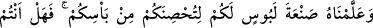

Ben de ıstıraptan, azaptan kurtuldum
Dün gece korkusuz bir uyku ile güzelce uyudum
Onun sesinden rahatlamam işte bundandı
Teşekkür olsun diye hediye getirdim, nerede o adam?
Müezzini görünce, bu hediyeyi kabûl et dedi
Çünkü bana sığınak oldun, elimden tuttun
Malda, mülkte, servette eşsiz biri olsaydım
Ben ağzını altınla doldururdum.
80. Ona, savaşın sıkıntılarından sizi koruması için zırh yapmayı öğrettik. Artık
şükredecek misiniz?
“Ona,” sizin faydanıza olmak üzere düşmanla “savaşın sıkıntılarından” yâni kılıç,
ok ve mızrak ile ölümden ve yaralanmaktan “sizi koruması için zırh yapmayı öğrettik.”
“__WORD__ bir fiili çok iyi yapmaktır. Her sanat (sun‘) bir fiildir, ancak her fiil sanat
değildir. “__WORD__ aslında zırh olsun, başkası olsun elbise anlamındadır. Dâvud (a.s.)’dan
önce zırh, enlemesine kesilmiş demir parçaları idi. Dâvud (a.s.) ise onları halkalar
hâline getirdi ve sıraladı.
Buradaki mûcize, Hz. Dâvud’un zırhı herhangi bir ustadan yardım görmeksizin, körük,
ateş, örs, çekiç gibi hiçbir âlete gerek duymaksızın yapmasıdır.
Lokman (a.s.), Dâvud (a.s.) ile birlikte oturuyor, onun yaptıklarını görüyor ve daha
önce görmediği için onun ne olduğunu sormak istiyordu. Ancak Dâvud (a.s.)’a bir şey
sormadı ve sustu. Dâvud (a.s.) zırhın yapımını bitirince kalktı ve üzerine giydi. Sonra
şöyle dedi: “Bu savaşta giyilecek ne güzel bir ridâdır/elbisedir.” İşte o zaman Lokman
(a.s.): “Öyle susma vardır ki hikmettir.” Hakîmler: “Söz gümüş ise, susmak altındır.”
demişlerdir.
Çok bilsen de az konuş
Biri yüz değil, yüzü bir söyle
“__WORD__ bütün kötülükler için kullanılsa da burada savaş anlamınadır.
Âyet, bütün sanatların Allah’ın yaratması ve öğretmesi ile ortaya çıktığına delâlet
etmektedir. Bir hadiste “Her sanatkârı ve onun sanatını Allah yarattı.”[194]
buyrulmuştur.
Mesnevî’de der ki: